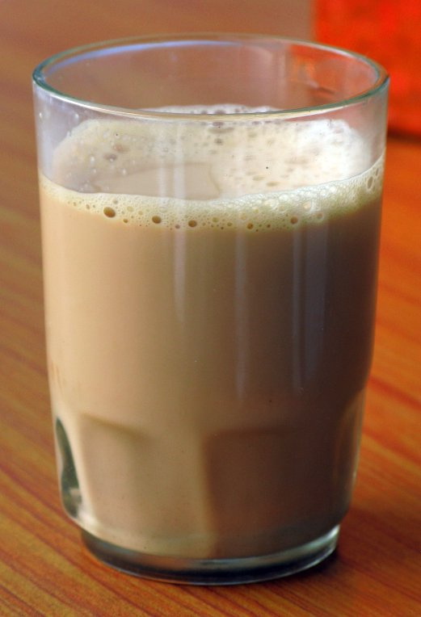

Masala Chai – Masala Tea – Indian Tea |
| Rateing |
| prep time:5 minit |
| cook time:10 minit |
| total time:15 minit |
|  |
Ingredients: |
5 cup Milk
1 tbsp Tea leaf
2 tsp Sugar
¼ tsp Ginger (grated)
¼ tsp Cardamoms (powder)
|
Instructions: |
|
Heat milk in a bowl.
Add tea leaf, sugar and other spices.
Boil till get good colour.
Serve hot with any snacks. |
video: |